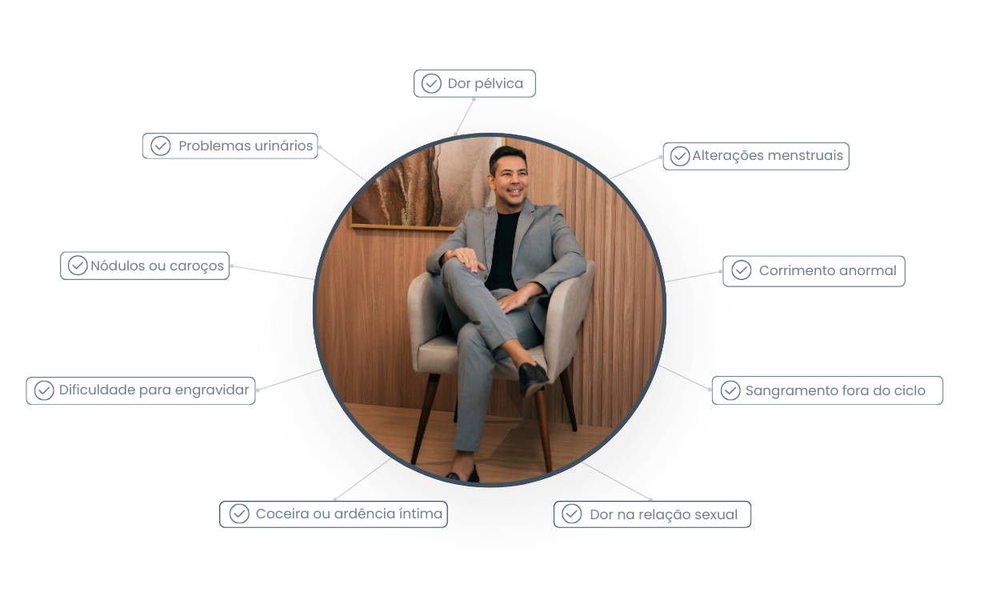
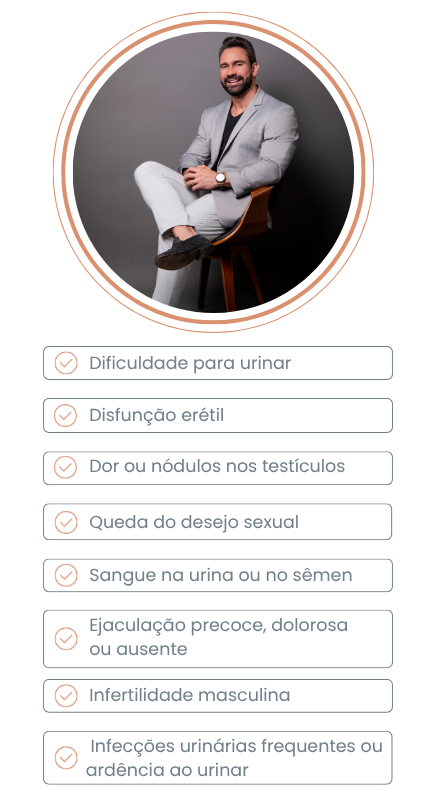

-
Queixas sexuais
-
Estética genital masculina
-
Reposição de testosterona
-
Criação e otimização de hábitos
-
Saúde masculina
-
Alta performance
-
Cirurgia minimamente invasiva
Dr. Edgar Oliveira Sarmento
Sou Edgar Oliveira Sarmento, homem (02/05/88), casado desde 2018 com Gabriela (30/06/91), e temos dois
filhos: Rodrigo (25/07/22) e Rafael (25/05/24); cristão e prezo o Estoicismo e Essencialismo.
Sou médico com atuação na Andrologia, formado em 2012 pela Universidade Federal da Bahia, e
especializações em Cirurgia Geral e Urologia, além de pós-graduações e subespecializações em cirurgia
minimamente invasiva, cirurgia robótica, Andrologia e procedimentos em estética íntima masculina.
No consultório, emprego o conceito de que "Alta performance começa com autoperformance", o que só pode ser
alcançado através da mudança de hábitos.
Sou médico com atuação na Andrologia, formado em 2012 pela Universidade Federal da Bahia, e especializações em Cirurgia Geral e Urologia, além de pós-graduações e subespecializações em cirurgia minimamente invasiva, cirurgia robótica, Andrologia e procedimentos em estética íntima masculina.
No consultório, emprego o conceito de que "Alta performance começa com autoperformance", o que só pode ser alcançado através da mudança de hábitos.
Problemas que resolvo no meu consultório
Tratamentos especializados com foco na sua qualidade de vida e bem-estar

Queixas sexuais
falta de libido, disfunção erétil, ejaculação precoce ou tardia
Tratamento especializado para problemas sexuais utilizando técnicas avançadas e personalizadas para cada caso específico.

Desconforto com a estética genital
ou desejo de melhora
Tratamentos para melhoria da estética genital com abordagem multidisciplinar, visando melhorar a autoestima e satisfação pessoal.

Reposição de testosterona
deficiência hormonal masculina
Diagnóstico e tratamento de deficiência hormonal com foco na identificação da causa e intervenção adequada para restaurar a qualidade de vida.

Criação e otimização de hábitos
para alta performance masculina
Estratégias personalizadas para otimização de hábitos e melhoria da performance geral, realizados com técnicas modernas e individualizadas.
Sintomas para procurar um Urologista:
 O que torna meu atendimento único
Experiência personalizada focada em resultados excepcionais

Cuidado com a saúde completa
Consultas com tempo adequado para ouvir e esclarecer dúvidas, estabelecendo uma relação de confiança e respeitando a individualidade de cada paciente.

7 Ps da Saúde do Homem de Alta Performance
Plano de tratamento baseado em 7 pilares fundamentais, proporcionando diagnóstico e tratamento mais rápidos e eficazes.

Planos de acompanhamento personalizados
Priorizo o acompanhamento contínuo da saúde masculina, com planos direcionados para um resultado completo.
Atuação em números
com cuidado e excelência
em saúde masculina
- Graduação em Medicina pela Universidade Federal da Bahia (2012)
- Especializações em Cirurgia Geral e Urologia
- Pós-graduações em cirurgia minimamente invasiva e cirurgia robótica
- Subespecialização em Andrologia
- Especialização em procedimentos em estética íntima masculina

Tratamentos especializados do Dr. Edgar Oliveira Sarmento
Procedimentos avançados em Andrologia com tecnologia de ponta e resultados comprovados
Consultas em Andrologia
Avaliação completa e especializada em saúde masculina, com diagnóstico preciso e plano de tratamento personalizado para cada necessidade específica.
Alargamento peniano com técnica UroFill
Procedimento minimamente invasivo utilizando técnica UroFill para aumento do diâmetro peniano com segurança e resultados naturais.
Ultrassonografia Doppler de pênis
Exame especializado para avaliação vascular peniana, fundamental no diagnóstico de disfunção erétil e outras condições vasculares.
Reposição hormonal masculina e implantes de testosterona
Tratamento hormonal completo com reposição de testosterona através de implantes, proporcionando resultados duradouros e melhoria da qualidade de vida.
Vasectomia
Procedimento de esterilização masculina definitiva realizado com técnica minimamente invasiva, proporcionando segurança e rápida recuperação.
Postectomia
Cirurgia de remoção do prepúcio (circuncisão) realizada com técnicas modernas, visando benefícios estéticos e funcionais com excelente cicatrização.
Tratamento e queixas sexuais
Abordagem completa para disfunções sexuais masculinas, incluindo disfunção erétil, ejaculação precoce e diminuição da libido com tratamentos personalizados.
Depoimentos

Perguntas frequentes
Esclareça suas principais dúvidas sobre os tratamentos e procedimentos em Andrologia
Quando devo procurar um urologista/andrologista?
Você deve procurar um andrologista quando apresentar sintomas como disfunção erétil, ejaculação precoce, diminuição da libido, dores na região genital, alterações hormonais, ou desejar realizar check-ups preventivos da saúde masculina. Também em casos de infertilidade, queixas estéticas genitais ou para orientação sobre contracepção definitiva.
Como funciona a reposição hormonal masculina?
A reposição hormonal masculina é indicada quando há deficiência de testosterona comprovada por exames. Oferecemos diferentes modalidades como implantes subcutâneos, géis, injeções ou adesivos. O tratamento é personalizado conforme o perfil de cada paciente, sempre com acompanhamento médico rigoroso e monitoramento regular dos níveis hormonais.
O que é a técnica UroFill para alargamento peniano?
O UroFill é um procedimento minimamente invasivo para aumento do diâmetro peniano, utilizando substâncias biocompatíveis e seguras. É realizado em consultório com anestesia local, tem recuperação rápida e proporciona resultados naturais. O procedimento é indicado para homens que desejam aumentar a circunferência peniana de forma segura.
A vasectomia é realmente definitiva?
A vasectomia é considerada um método contraceptivo definitivo e altamente eficaz (mais de 99%). Embora seja tecnicamente possível reverter através de microcirurgia, o procedimento de reversão é mais complexo e não garante o retorno total da fertilidade. Por isso, deve ser considerada apenas por homens que têm certeza de não desejar mais filhos.
Como é feito o diagnóstico da disfunção erétil?
O diagnóstico da disfunção erétil envolve uma avaliação completa incluindo histórico médico detalhado, exame físico, exames laboratoriais (hormônios, glicemia, perfil lipídico) e, quando necessário, ultrassonografia com Doppler peniano para avaliar o fluxo sanguíneo. Isso permite identificar as causas e definir o melhor tratamento personalizado.
Qual a diferença entre postectomia e circuncisão?
Postectomia e circuncisão são termos que se referem ao mesmo procedimento: a remoção cirúrgica do prepúcio (pele que recobre a glande). A cirurgia pode ser indicada por motivos médicos (fimose, parafimose, infecções recorrentes) ou estéticos. É realizada com técnicas modernas que garantem excelente resultado estético e funcional.
Como funciona o acompanhamento pós-tratamento?
O acompanhamento é personalizado conforme cada tratamento e paciente. Inclui consultas de retorno programadas, monitoramento de resultados através de exames quando necessário, ajustes terapêuticos e orientações para otimização dos resultados. Meu compromisso é garantir que você alcance os melhores resultados com segurança e satisfação.
Ainda tem dúvidas?
Entre em contato e esclareça todas as suas questões em uma consulta personalizada
Nosso consultório
Localizado no coração de Brasília, com fácil acesso e infraestrutura completa
Endereço
SGAS 613/614, Ed. Vitrium
BLOCO 2, 3° andar
Asa Sul, Brasília-DF
CEP 70200-740
Contato
Telefone: (61) 99606-5036
WhatsApp disponível
Atendimento personalizado
Facilidades
Estacionamento disponível
Fácil acesso ao metrô
Ambiente climatizado